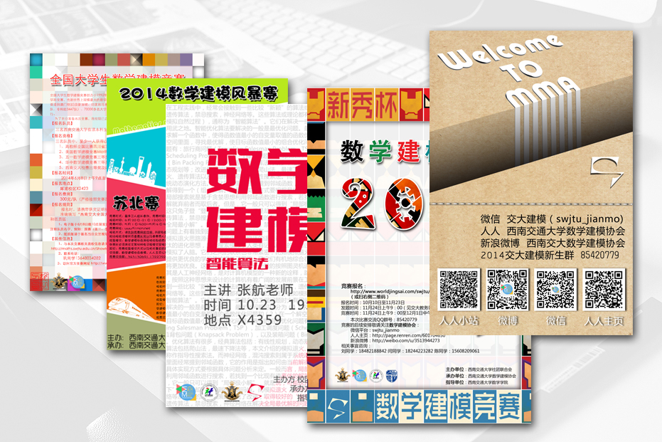
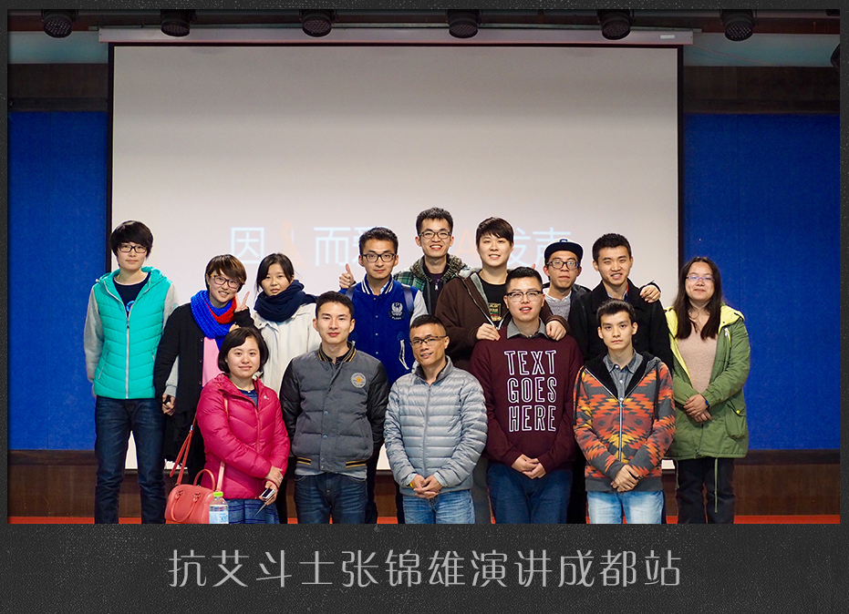
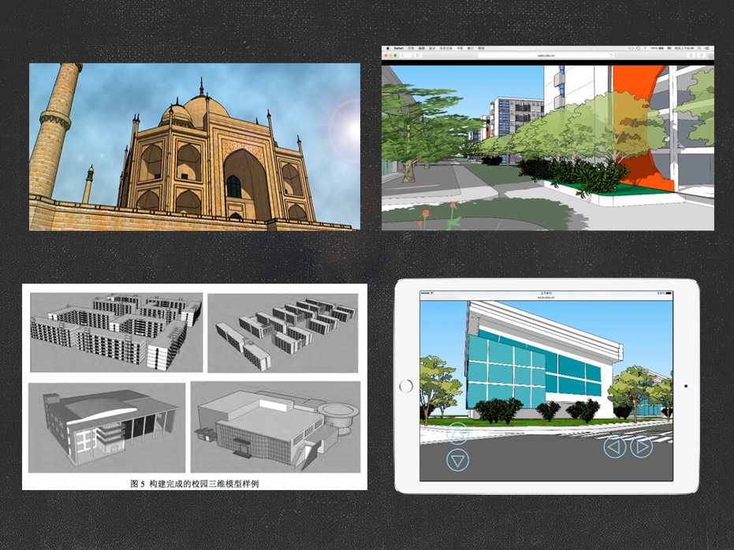

欢迎来到这里，希望你喜欢这里。 这是我工作的其中一部分意义。
技术部部长
创图汇部长
志愿者小组
前端工程师
前端工程师
Html5/Css3
Photoshop
Javascript
无比热爱前端
熟悉HTML,CSS,能够编写语义化的HTML代码
习惯使用SASS编写高效整洁的CSS代码
熟悉javascript, 掌握原型闭包等js特性，能够编写基本的js原生代码
了解前端模块化思想，可以在各个规范下进行模块化的开发
熟悉jquery/underscore等工具库
熟练使用photoshop等图片编辑工具
习惯使用github进行代码管理
了解 pyhton 能够编写自动化脚本，会写简单的爬虫，更有助于对与语义化的理解
了解HTTP协议，会使用AJAX进行异步加载操作

部分海报作品

公益活动

建模作品
http://codepen.io/ for background animation.
http://glyphicons.com/ for free icons.